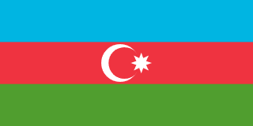

🎶 SEMIFINALE 8 🎶
7 canzoni, 1 posto in finale. Chi passerà?
 Bulgaria 2011 – Ivan Ivanov – "Superhero"
Bulgaria 2011 – Ivan Ivanov – "Superhero"
 Ucraina 2024 – Artem Kotenko – "Hear me now"
Ucraina 2024 – Artem Kotenko – "Hear me now"
 Azerbaijan 2012 – Omar & Suada – "Girls & Boys"
 Malta 2015 – Destiny Chukunyere – "Not my soul"
Malta 2015 – Destiny Chukunyere – "Not my soul"
 Bielorussia 2003 – Volha Satsiuk – "Tantsuy"
Bielorussia 2003 – Volha Satsiuk – "Tantsuy"
Malta 2017 – Gianluca Cilia – "Dawra Tond"
Bielorussia 2006 – Andrey Kunets – "Noviy Den"
Classifica Semifinale 8
| Posizione |
Paese |
Artista |
Canzone |
| 1° |
Malta 2015 |
Destiny Chukunyere |
"Not my soul" |
IN FINALE! |
| 2° |
Ucraina 2024 |
Artem Kotenko |
"Hear me now" |
| 3° |
Azerbaijan 2012 |
Omar & Suada |
"Girls & Boys" |
| 4° |
Bulgaria 2011 |
Ivan Ivanov |
"Superhero" |
| 5° |
Malta 2017 |
Gianluca Cilia |
"Dawra Tond" |
| 6° |
Bielorussia 2003 |
Volha Satsiuk |
"Tantsuy" |
| 7° |
Bielorussia 2006 |
Andrey Kunets |
"Noviy Den" |